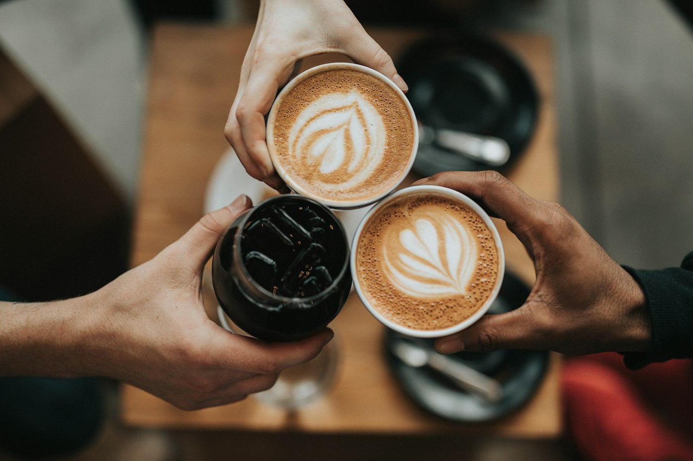
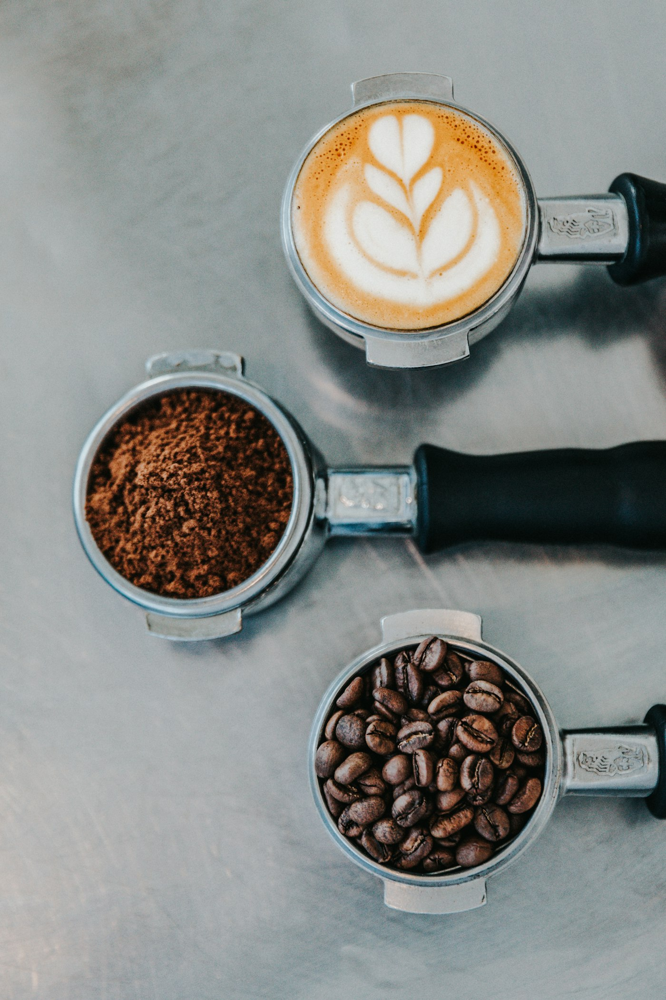
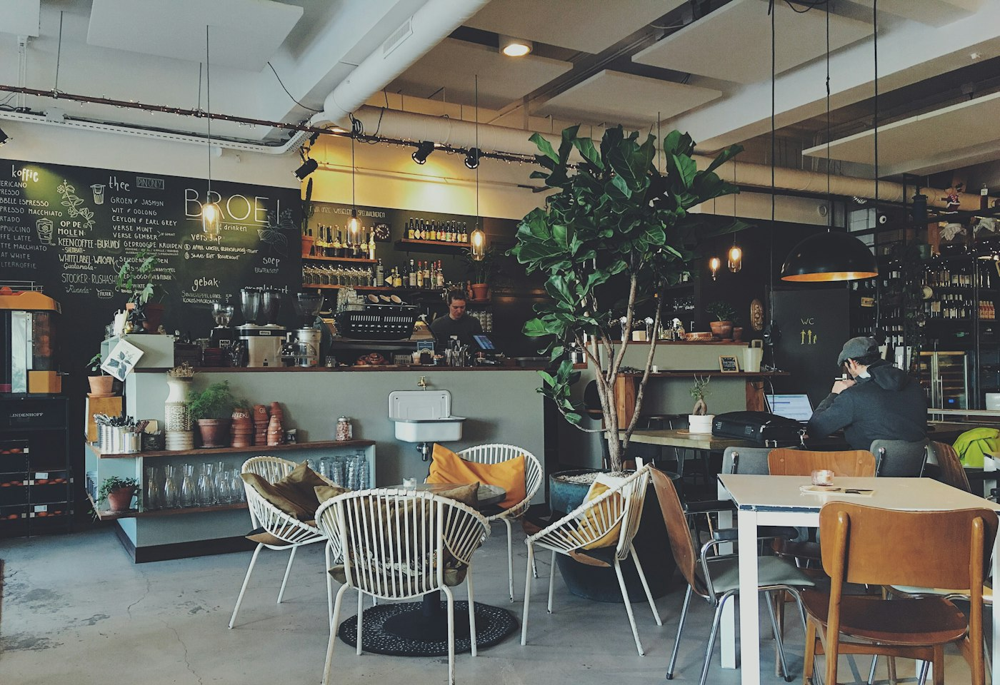
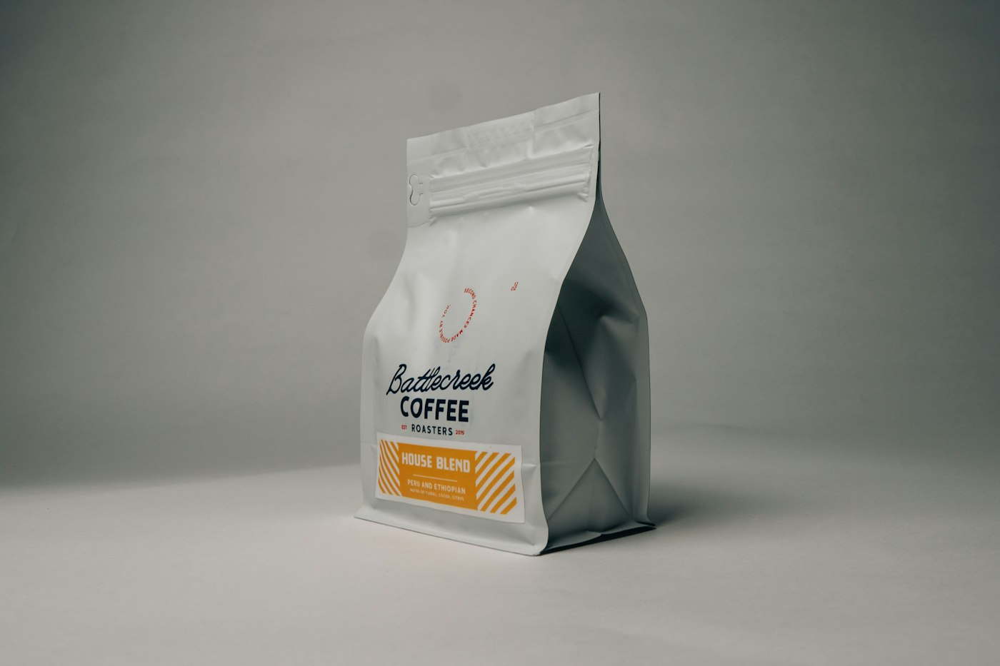

Menu
お品書き

ブレンドコーヒー¥500
深煎り・中煎りから選べます。

カフェラテ¥600

自家焙煎の豆 200g¥1,400
8:00 − 18:00 水曜定休

一乗寺の路地にある、カウンター6席の喫茶店です。
自家焙煎のコーヒーと、昔ながらの固めのプリンをご用意しています。
モーニングはトースト付き。
ナポリタンとコーヒーのセット。
焼きたてのプリンが並びます。
豆は閉店まで買えます。
開いてすぐ「今日やっているか」が分かることを、いちばん大切にしました。

深煎り・中煎りから選べます。


曼殊院道の角を曲がって、2軒目の白いのれんが目印です。